需求定义能力
定义问题阶段定义问题比解决问题更值钱｜将业务痛点进行精准描述，拆解需求，形成精准的指令
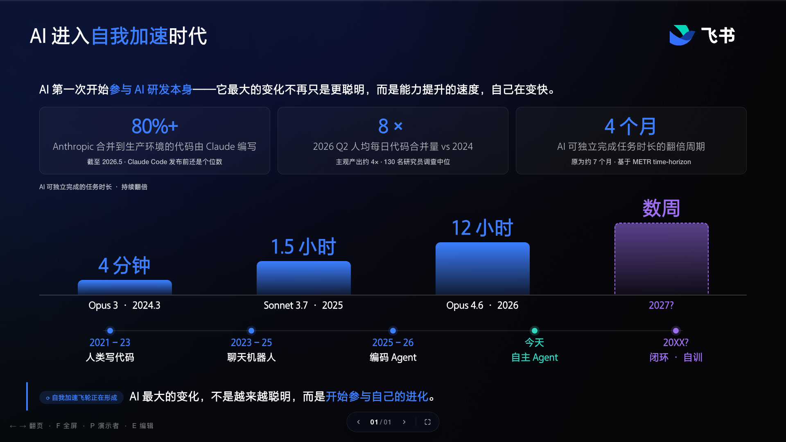
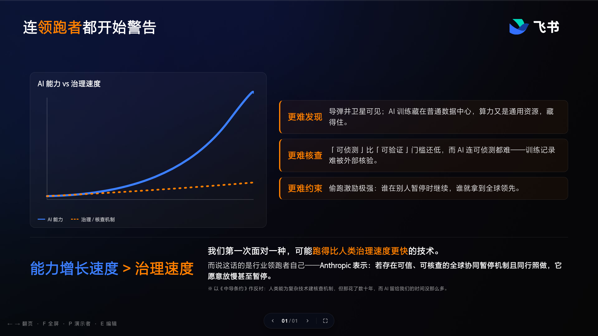
未来最大的矛盾，不是模型能力不足，而是组织能力失配。
AI 把大量代码推到组织后，人工评审反而成为新瓶颈——加速了一个环节，瓶颈只是挪到没被加速的环节。
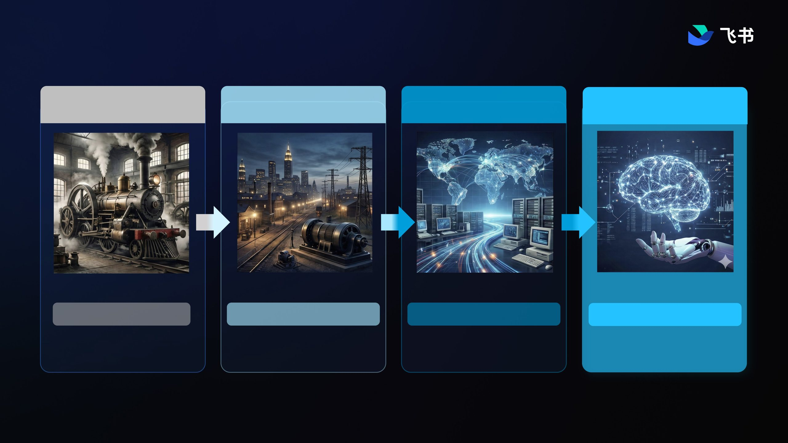
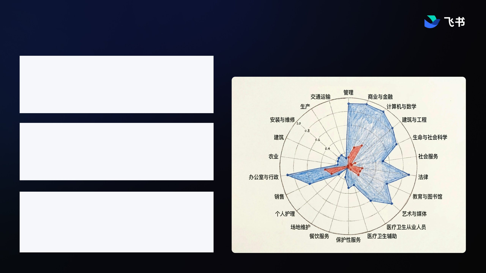
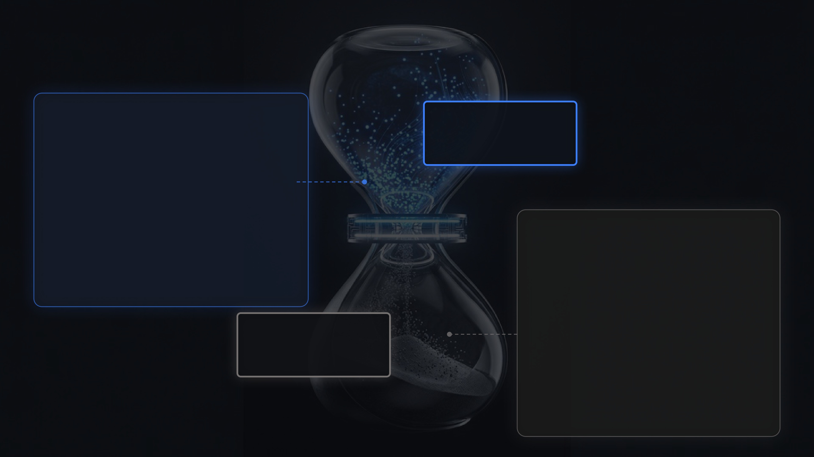
定义问题比解决问题更值钱｜将业务痛点进行精准描述，拆解需求，形成精准的指令
统筹AI智能体的指挥官｜对AI能力边界有清晰了解，调用能力解决AI擅长的问题
判断力和鉴赏力是核心竞争力｜利用专业经验进行校核、把关与判断，确保输出的价值

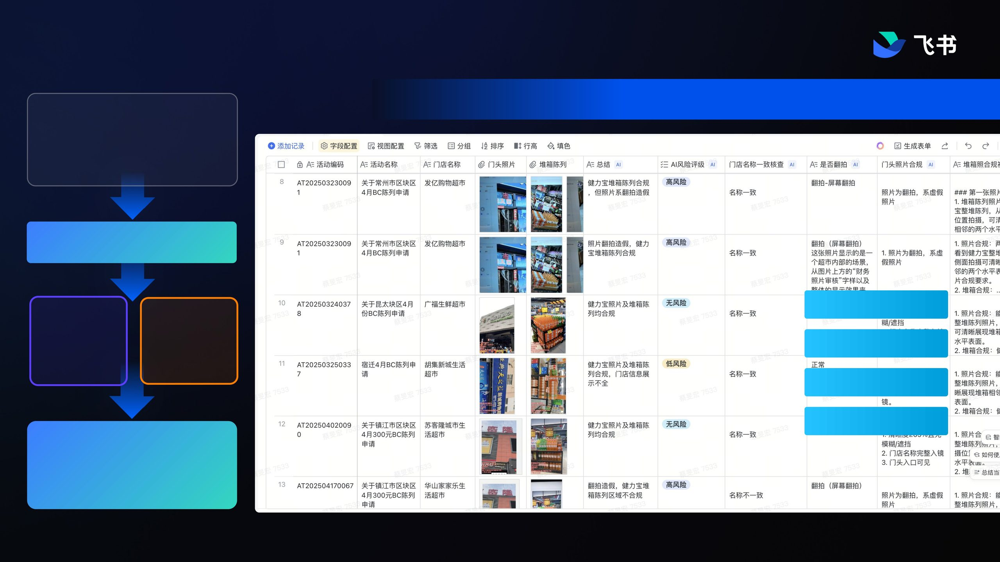
飞聆用多智能体协同完成访谈、追问、归档和分析,把一段段对话转化为可复用的结构化洞察。
康师傅 · 一线晨夕会深度洞察报告:执行现状、市场反馈与战略博弈(2026.01.08)
1 月 13 日 修改
⚠ 本报告基于 1 月 8 日约 2000 场一线晨会记录(150 万字)。一线声音带主观性与片段性,作为一手信号的补充与 AI 能力检验,不取代实地调研。
本报告基于约 2000 场一线晨夕会记录的深度文本挖掘。作为一线直接来自销售前线的最原始反馈,这份材料剥离了层层报告的修饰,把饮品销售引擎背后的真实摩擦、市场温度以及执行偏差完整暴露出来。
分析显示,销售组织正运行在一种"极限强度推动"模式下。趋势性品类(如无糖茶)展现自然增长,但战略性大单品的破局仍面临渠道结构、执行惯性以及工具摩擦的强力阻挠。
关键发现:
1. 品类分化加剧。趋势性品类已自然形成"用脚投票",老品类陷入难推动的困境,暴露品牌在高端化和年龄结构升级中的结构性痛点。
2. 执行层数字化疲劳。推广工具(如拍照打卡)合规率极低、操作摩擦极强,数字化工具被更多视为监管负担而非赋能。

基础制度、SOP、手册、文档说明、标准记录 — 在线化、可视化并不难。
老专家做事的肌肉记忆、直觉与判断 — 重要,却很少被企业开发出来。
周五早 8 点 · 新品 30 城同步铺货 · A 城首日开瓶率仅 12%
系统里都有 ——
各城销量 / 库存
端架照片 / 投诉退货
试饮评分 / 复购率
看不过来
仪表盘告诉你 ——
"A 城开瓶率 12% 偏低
建议 +DM 投放 / +试饮 / +促销"
知道发生了什么,
不知道下一步做什么
老品牌经理说:
"12% 不是产品问题 —— B 城同 SKU 开瓶率 28%。八成是 A 城 KA 换了陈列主管,把我们从黄金位挪到最底层了。叫区域 3 天内拍照查端架。"
只在脑子里 · 退休带走
打开任何一套 CRM,被当成资产真正存下来的,只有 Result(成交订单)。R 写着「关系」,跑的全是「结果」。
一笔订单，它如获至宝 一百次没成交的拜访，它视而不见
可关系,恰恰长在那一百次里
它记下了「发生了什么」,却没记下「为什么」—— 客户聊了什么、在意什么、为什么还没买,全丢了。
所以「洞察客户」的第一步,不是买更多数据,是把丢掉的那个 R 补回来
优秀导购心里都有本账:这位老客户偏爱什么版型、什么色系、什么场合来买、上次纠结没拿下的是哪件。可这本账只在导购脑子里,人一走、店一换,客户就被打回陌生人。沉进 CRM 后,下次她进店,导购从「看起来像要买正装」变成「接着上次那条没拿的连衣裙聊」。
—— 记下的是她的偏好,而不只是她刷了多少钱。
我自己就是例子:每次飞,我都把毛毯递回去——我不用。可这条反馈从没被任何系统接住,所以每一程,空乘还是默认给我铺上毛毯,我还得再退一次。如果「这位旅客不要毛毯」被记下来,下一程的空乘不用问就懂我。
—— 记下的不是我飞了多少里程,是怎么服务我才舒服。
经销商以前的系统只冷冰冰显示他进了多少货、剩多少库存(还不一定准)。可每次拜访里真正值钱的信息全漏了:这家到底谁拍板、有多忠诚、有没有摇摆、背后连着哪些人。把每次拜访沉下来,就拼成一张可读的画像:决策人、关系链、忠诚度、风险。
—— 记下的不是订单流水,是这门生意的底牌。
三个行业,同一个动作——把每一次接触沉下来。偏好、体验、关系,才是 R 真正该存的东西,而旧系统只存了交易。
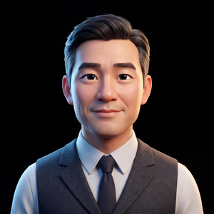
不是逼销售填表——AI 从电话、沟通记录、拜访对话里自动打标签，每一次接触都给他补一个 R。
把服务全过程沉成对他的标签增补——补上真正的 R（Relation），不只是 Result
这张越补越厚的画像，就是会复利的关系资产。
王哥 · 康师傅 18 年区域经理 · 拜访首次合作的新经销商陈总 · 总部数据模型批了 800 万首批政策
陈总样品柜里,康师傅占 C 位,旁边摆农夫山泉 + 东方树叶
他是真心要做康师傅的 — 不是凑数代理,是把康师傅当主推品类。合作意愿强,值得深度绑定 + 资源倾斜
陈总往门口看老婆 · 老板娘进来说"我不懂业务"却坐下削苹果
真正拍板的是老板娘 — 家庭决策稳定、不会朝令夕改。把方案讲给她听,这种合作能走 5-10 年
仓库 60% 满 + 里头有积灰 + 20 分钟 1 辆送货车
现在的分销承不下 800 万,但能稳稳承下 500 万。给对的量,跑通后再加单,比一次压死好
每个部门都在自己的系统里尽职
但合起来就是慢
没有人能看到全局
一个新产品决策落地需要 8 个部门 · 8 个系统 · 数 10 次跨部门对齐
配方能否量产要等工艺试产数据;成本能不能跑通要等采购报价;保质期模型要等品保结论 —— 但下游部门还没接到任务
改动只在工艺部 Excel 里,研发不知道配方被改;新加物料采购能不能买到要等采购确认;新工艺天津厂还是杭州厂能做要等工厂回复
供应商 B 没做过康师傅口味测试,要不要用要等研发评估;新供应商认证流程 4-6 周;不认证就用,质量出问题责任在采购
良率低,到底是配方、工艺、还是物料问题,自己说不清;杭州厂能不能接要查两厂 MES,但跨厂数据不通;真正原因藏在老主管陈师傅的'手感'里
加速试验本身要 4-6 周,没法压缩;新供应商物料的稳定性要单独做;法规层面'减盐 30%'的标注需要科学依据,KA 那边的 DM 海报在等这份报告
问销售要数,销售说看市场;问市场,市场说看 KA;问 KA,KA 说看上市政策;拉了 4 次电话会拍脑袋定 200 万箱;多了压货少了断货,责任在供应链
沃尔玛要求海报标'减盐 30%'科学依据,要等品保检测报告(2-3 周);上架价格等财务出毛利模型;首批进货量等供应链确认;沃尔玛 Q3 档期下周截止
传播脚本要等法规审,法规审要等检测报告;一线业代话术培训要等培训部排期(下个月);消费者教育至少需要 4 周,但新品上市当天业代还没正式话术
AI 助理不替代任何人的判断,直接促进信息流动,让 8 个部门串联起来持续协作
CEO 拍板新产品 · 8/5 天津厂试产。 督办员一键 broadcast,4 家供应商以各自方式回复:
动画 15s 自动循环 · 鼠标悬停暂停

从"年度目标"出发,让 AI 学会像你一样思考
管理分身的本质,是让你的判断力,从"只能在场时使用",变成"24 小时在线的组织资产"
业务不在线,AI 就不在场 —— AI 处理的是数字化信号,看不见纸上的字,也读不出散落在个人 Excel 里的数据
AI 每往前移一步,人需要做的就越靠近 —— 提出对的问题
如果你的团队里出现了一个产出 10 倍于同事的人,这不是个人英雄。
这是一个信号:你的组织,该重新设计岗位了。
ROI 算不清,不要等算清 — 看方向 + 用迭代去逼近答案
AI 项目缺历史样本,ROI 难以精确测算
方向对了就该干 — 让落地本身回答 ROI
传统 12-18 个月规划周期,在 AI 时代失效
周期越短 · 校准越快 · 错也错得小
AI 时代项目的成功 = 对方向的押注 + 迭代的速度,不是开局就能算清 ROI
员工产出 ≈ 个人能力 × Token 消耗能力
AI 时代的新公式
家头部企业 · 已为优秀员工开放无限量 Token
2026 年春节后陆续宣布 · 这是行业首批信号
➜ 无限量使用 Token,本质上就是 无限量放大员工价值
重画流程,不是减少步骤,是推翻步骤的存在前提
「伸手拦车」消失了 —— 不是因为它变快了,是因为系统知道你在哪、车在哪。这个动作的存在前提,被推翻了。
AI 不是用来跑赢现有流程的,是用来让现有流程消失的
不是先上工具,而是先选出那个最该设计人机协同机制的岗位
※ 可标准化度三档 全可标准化 → 数字员工接管 ｜ 半标准化 → 人机协同 ｜ 靠经验判断 → 人为主、AI 轻辅助
同一道题,差距全在“怎么算”——而“怎么算”,正是 AI 要萃取的隐性经验
岗位 AI 化的价值不是取代人,而是让人回归“链接与信任”——帮员工减负,帮企业拿到 AI 时代的组织红利
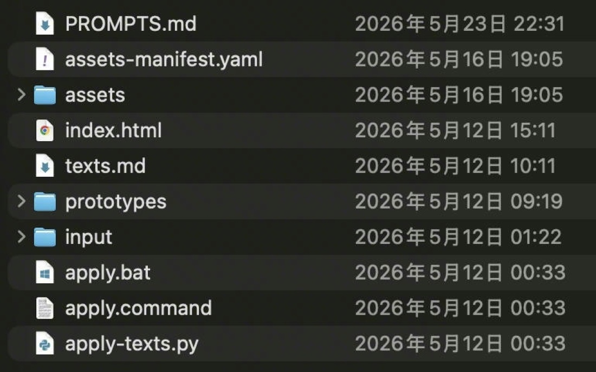
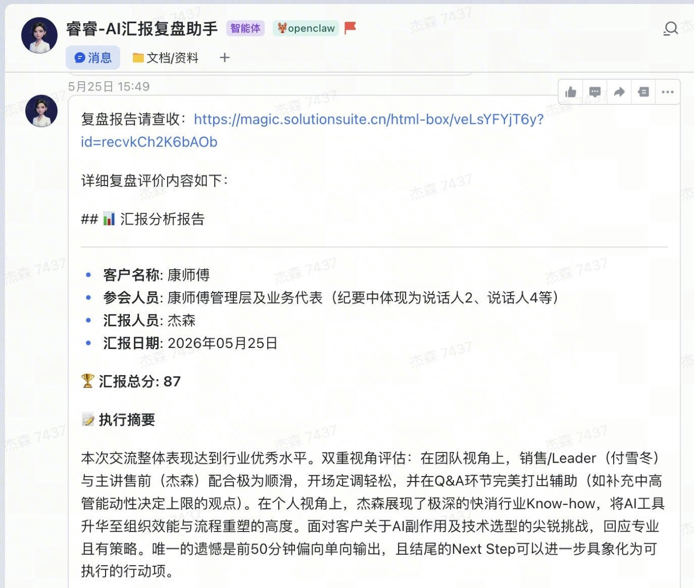
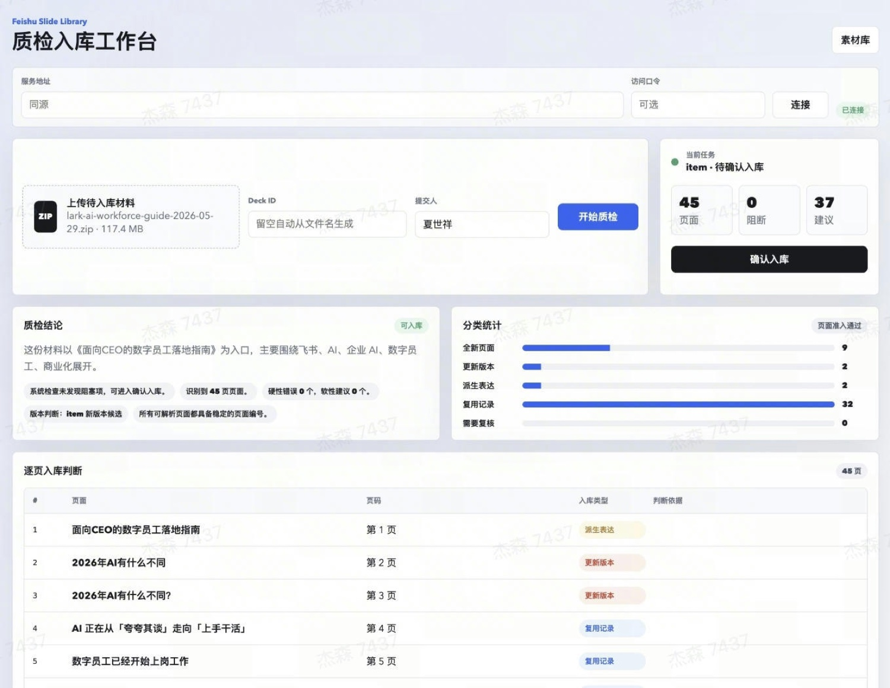
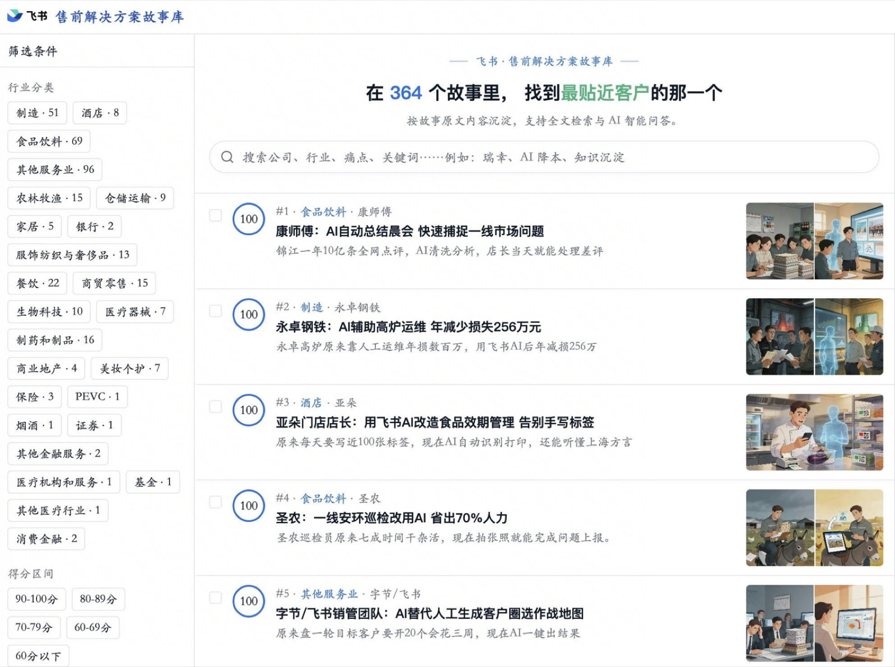
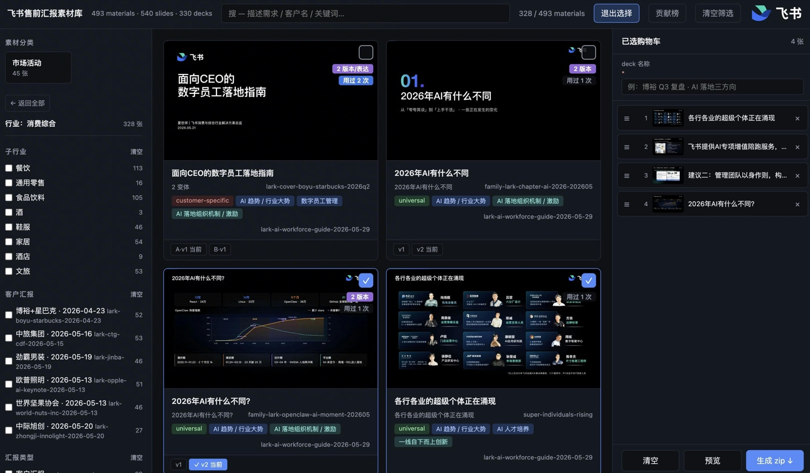
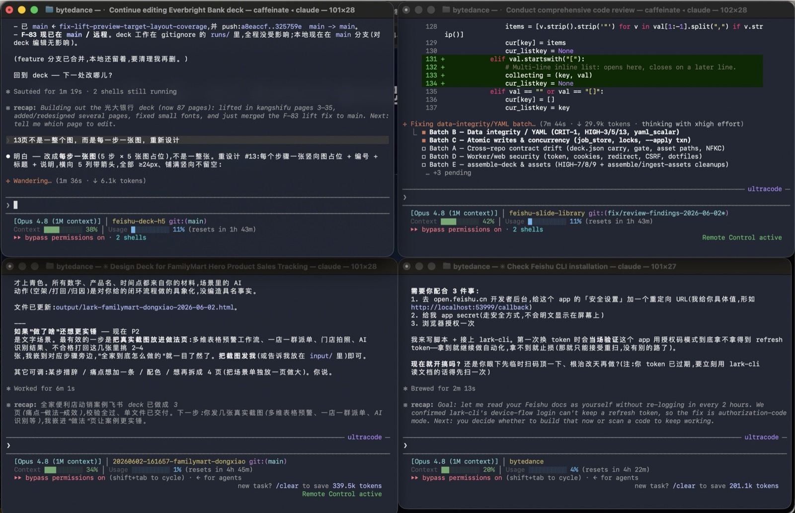